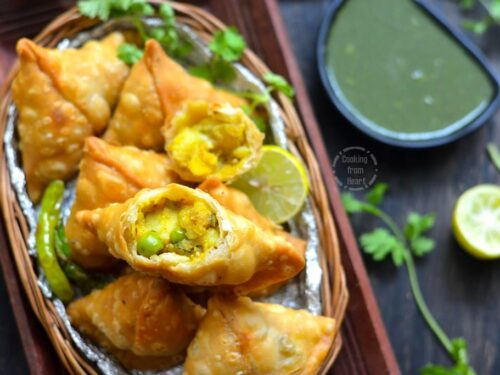

Samosa

Description
If you think of an “Indian snack”, probably the first image that pops into mind is the humble Samosa.
These little fried parcels of flaky-yet-tender pastry, stuffed to the brim with spiced potatoes and other ingredients, are pretty much my idea of the world’s greatest savoury snack.
Ingredients
- Ajwain seeds
- Amchur
- Asafoetida
- Black mustard seeds
- Garam masala
- Cumin seeds and powder, coriander seeds and turmeric
- Flour
- Green chilli
- Ghee or oil
- Potatoes
- Ginger
- Peas
- Coriander
Steps
- Part1: Rough-mashed potato - Boil potatoes until tender, then use a fork to roughly mash. It's nice to have bits of chunks in the potato for interest, rather than a soft, creamy and uniform mash;
Cook spices and aromatics - A healthy dose of spices are fried up with fresh ginger and chilli which is then tossed through along the peas;
Add potato - Add the mashed potato and gently but thoroughly mix through, so the flavouring fully permeates the potato; and
Fresh coriander, then cool - Lastly, mix through fresh coriander, then let the filling cool completely before using.
- Part2: Mix dry ingredients, add ghee - Mix the flour, Ajwain seeds and salt, then pour the ghee or oil in;
Rub fat in - Use your fingers to rub the ghee in until it resembles coarse breadcrumbs. This is the step that gives the Samosa pastry the signature flakiness we know and love so much!
Form dough, rest 30 minutes - We then add water until it is wet enough to form a dough. The dough should be soft and pliable, but not so sticky that it sticks to your hands. Form a ball and let it rest for 30 minutes;
Divide - Form a log, then cut into 6 equal pieces;
Shape dough into balls;
Roll out balls to 2mm thick - Roll the dough balls into discs 2mm thick. They should be about 16cm /6.5” in diameter.
- Part3: Cut in half - Use a small knife to cut a circle in half. Work with one disc of dough at a time. Keep the others covered under cling wrap so they don't dry out;
Brush disc with water along half the straight edge you just cut;
Fold one side in;
Form cone - Then fold the other side in, overlapping by about 1cm / 2/5″, to form a cone shape. Press joined edges together to secure;
Fill cone - Form an “O” with your thumb and forefinger, then place the cone inside (like at the holders at the ice cream shop). Fill with the spiced potato filling;
Brush with water along the cone mouth edge;
- Part4: First fry: Seal Pastry - Heat the oil to 160°C/320°F, then fry 3 or 4 samosas for 3 minutes, turning occasionally. The pastry should be cooked but pale;
Drain on paper towels then repeat this first fry with remaining samosas;
Second fry: Colour and crisp - Once you've done the first fry with all the Samosas, increase the oil heat to 190°C/375°F. Then fry the Samosas in batches of 3 or 4 for around 1 1/2 to 2 minutes until golden. The Samosas are already cooked through, this step is just to colour and really crisp up that pastry;
Drain on paper towels and serve piping hot for optimum eating experience!
Samosas, like Pakoras, are typically served as a starter or snack, being the terrific hand-held size that they are. Though mind you, I've seen plenty of gigantic Samosas in my time. I can't deal with the thought of the volume of oil required to fry those beasts! 😂
I'm sharing this Samosa recipe as part of an Indian Week, so you can make your very own Indian feast! Just to recap, here's what we've got on the menu:
Palak Paneer - The iconic Indian Spinach Curry with your very own homemade cheese curd (puts store bought to shame!);
Naan - The softest, fluffiest, chewiest naan you will ever make!
Indian Cabbage Salad - This one will surprise you, it's so incredibly delicious; and
Samosas - to kick start your party!